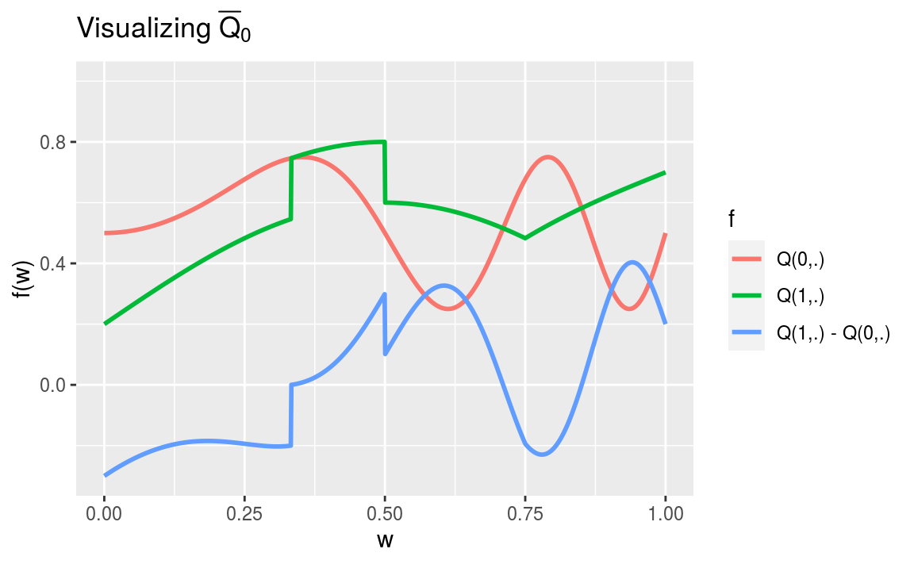

Section 1 A ride
1.1 Introduction
Our ambition is to present a gentle introduction to the field of targeted learning. As an example, we consider statistical inference on a simple causal quantity that is ubiquitous in the causal literature. We use this exemplar parameter to introduce key concepts that can be applied to more complicated problems. The introduction weaves together two main threads, one theoretical and the other computational.
1.1.1 A causal story
We focus on a causal story where a random reward (a real number between 0 and 1) is given based on an action undertaken (one among two) and the random context where the action is performed (summarized by a real number between 0 and 1). The causal quantity of interest is the average difference of the two counterfactual rewards. This is a story as old as time. Should we take the red pill or the blue pill? Should we show our customers advertisement A or advertisement B? Should we require individuals to undergo cancer screening? At their core, each of these questions is asking what action should be taken to maximize a “reward.”
We will build several estimators and discuss their respective merits, theoretically and computationally. The construction of the most involved estimator will unfold in targeted learning territory, at the frontier of machine learning and semiparametrics, the statistical theory of inference based on semiparametric models.
1.1.2 The tlrider package
The computational illustrations will be developed based on the companion
package tlrider. The package can be installed by
running the following code:
The version used in this document is 1.1.0.
Additional packages are also required, including tidyverse (Wickham and Grolemund 2016), caret
(Kuhn 2020) and ggdag (Barrett 2018). Assuming that these are installed too, we can
run the next chunk of code:
1.1.3 What we will discuss
To begin, we discuss the nature of the parameter of interest, viewing it as the value of a statistical mapping evaluated at the law of the data (Section 2), with an emphasis on the smoothness and double-robustness properties inherited from the mapping (Sections 3 and 4). We then turn to the estimation of the parameter of interest. We first introduce and comment upon a simple inference strategy assuming provisionally that a relevant feature of the law of the data is known to us (Section 6). Second, we present the notion of nuisance parameters and adopt an algorithmic stance on their estimation (Section 7). Third, we introduce and comment upon two “naive” inference strategies (Section 8), the one-step correction procedure (Section 9) and, finally, the targeted minimum loss estimation procedure tailored to the inference of the parameter of main interest. In the appendix, we collect our notation (Section A), and present some results that are used in the main text and their proofs (Sections B and C).
1.2 A simulation study
1.2.1 Reproducible experiment as a law
We are interested in a reproducible experiment. Every time this experiment is run, it generates an observation that we call \(O\). We view \(O\) as a random variable drawn from the law of the experiment that we denote by \(P_{0}\).
We view \(P_{0}\) as an element of the model \(\calM\). The model is a collection of laws. In particular, the model contains all laws that we think may plausibly describe the law of the experiment. Thus, the choice of model is based on our scientific knowledge of the experiment. The more we know about the experiment, the smaller is \(\calM\). In all our examples, we use large models that reflect a lack of knowledge about many aspects of the experiment.
1.2.2 A synthetic reproducible experiment
Instead of considering a real-life reproducible experiment, we focus for pedagogical purposes on a synthetic reproducible experiment. Thus we can from now on take on two different roles: that of an oracle knowing completely the nature of the experiment, and that of a statistician eager to know more about the experiment by observing some of its outputs.
Let us run the example built into the tlrider package:
A few objects have been defined:
The function expit implements the link function \(\expit : \bbR \to ]0,1[\) given
by \(\expit(x) \defq (1 + e^{-x})^{-1}\). The function logit implements its
inverse function \(\logit : ]0,1[ \to \bbR\) given by \(\logit(p) \defq \log [p/(1-p)]\).
Let us take a look at experiment:
experiment
#> A law for (W,A,Y) in [0,1] x {0,1} x [0,1].
#>
#> If the law is fully characterized, you can use method
#> 'sample_from' to sample from it.
#>
#> If you built the law, or if you are an _oracle_, you can also
#> use methods 'reveal' to reveal its relevant features (QW, Gbar,
#> Qbar, qY -- see '?reveal'), and 'alter' to change some of them.
#>
#> If all its relevant features are characterized, you can use
#> methods 'evaluate_psi' to obtain the value of 'Psi' at this law
#> (see '?evaluate_psi') and 'evaluate_eic' to obtain the efficient
#> influence curve of 'Psi' at this law (see '?evaluate_eic').The law \(P_{0}\) of the synthetic experiment experiment built by us generates
a generic observation \(O\) that decomposes as \[\begin{equation*} O \defq (W, A,
Y) \in [0,1] \times \{0,1\} \times [0,1]. \end{equation*}\] We interpret \(W\) as
a real valued summary measure of a random context where an action \(A\) chosen
among two is undertaken, leading to a real valued reward \(Y\).
We can sample from the experiment (simply run ?sample_from to see the man
page of method sample_from). The next chunk of code runs the experiment five
times, independently:
1.2.3 Revealing experiment
Acting as oracles, we can peek into experiment and reveal a selection of
relevant features (simply run ?reveal to see the man page of method
reveal). Made by us, the selection exhibits features that will play an
important role in the text.
relevant_features <- reveal(experiment)
names(relevant_features)
#> [1] "QW" "Gbar" "Qbar" "qY" "sample_from"We have an oracular knowledge of experiment and can thus comment upon the
features of \(P_{0}\) revealed in relevant_features.
QW
The QW feature describes the marginal law of \(W\), that we call \(Q_{0,W}\).1
relevant_features$QW
#> function(W,
#> mixture_weights = c(1/10, 9/10, 0),
#> mins = c(0, 11/30, 0),
#> maxs = c(1, 14/30, 1)) {
#> out <- sapply(1:length(mixture_weights),
#> function(ii){
#> mixture_weights[ii] *
#> stats::dunif(W,
#> min = mins[ii],
#> max = maxs[ii])
#> })
#> return(rowSums(out))
#> }
#> <environment: 0x103715d8>It appears that \(Q_{0,W}\) is a mixture of the uniform laws over \([0,1]\) (weight \(1/10\)) and \([11/30,14/30]\) (weight \(9/10\)).2
Gbar
The Gbar feature describes the conditional probability of action \(A = 1\)
given \(W\). For each \(a \in \{0,1\}\), we denote \[\begin{align*} \Gbar_0(W)
&\defq \Pr_{P_0}(A = 1 | W), \\\ell\Gbar_0(a,W) &\defq \Pr_{P_0}(A = a |
W).\end{align*}\] Obviously, \[\begin{equation*}\ell\Gbar_{0}(A,W) =
A\Gbar_{0}(W) + (1-A) (1-\Gbar_{0}(W)).\end{equation*}\]
relevant_features$Gbar
#> function(W) {
#> expit(1 + 2 * W - 4 * sqrt(abs((W - 5/12))))
#> }
#> <environment: 0x103715d8>Note how real numbers of the form \(1 + 2W - 4 * \sqrt{|W - 5/12|})\) are mapped into the interval \([0,1]\) by the \(\expit\) link function. We refer the reader to Figure 7.2 for a visualization of \(\Gbar_{0}\).
qY
The qY feature describes the conditional density of \(Y\) given \(A\) and \(W\).
For each \(y\in ]0,1[\), we denote by \(q_{0,Y}(y, A, W)\) the conditional density
evaluated at \(y\) of \(Y\) given \(A\) and \(W\).
relevant_features$qY
#> function(obs, Qbar, shape10 = 2, shape11 = 3){
#> A <- obs[, "A"]
#> AW <- obs[, c("A", "W")]
#> QAW <- Qbar(AW)
#> shape1 <- ifelse(A == 0, shape10, shape11)
#> stats::dbeta(Y,
#> shape1 = shape1,
#> shape2 = shape1 * (1 - QAW) / QAW)
#> }
#> <environment: 0x103715d8>It appears that the conditional law of \(Y\) given \(A\) and \(W\) is the Beta law
with conditional mean and variance characterized by the Qbar feature of
experiment (see below) and the shape10 and shape11 parameters.
Qbar
As for the Qbar feature, it describes the conditional mean of \(Y\) given \(A\)
and \(W\).
relevant_features$Qbar
#> function(AW) {
#> A <- AW[, "A"]
#> W <- AW[, "W"]
#> A * (cos((-1/2 + W) * pi) * 2/5 + 1/5 +
#> (1/3 <= W & W <= 1/2) / 5 +
#> (W >= 3/4) * (W - 3/4) * 2) +
#> (1 - A) * (sin(4 * W^2 * pi) / 4 + 1/2)
#> }
#> <bytecode: 0x11210630>
#> <environment: 0x103715d8>We denote \(\Qbar_0(A,W) = \Exp_{P_{0}}(Y|A,W)\) the conditional mean of \(Y\) given \(A\) and \(W\). Note how \(\Qbar_0(A,W)\) does depend heavily on \(A\) and \(W\). We refer the reader to Section 1.3 for a visualization of \(\Qbar_{0}\).
sample_from
Finally, the sample_from feature is the function called by method
sample_from when it is applied to an object of class LAW, like
experiment.
relevant_features$sample_from
#> function(n, ideal = FALSE) {
#> ## preliminary
#> n <- R.utils::Arguments$getInteger(n, c(1, Inf))
#> ideal <- R.utils::Arguments$getLogical(ideal)
#> ## ## 'Gbar' and 'Qbar' factors
#> Gbar <- experiment$.Gbar
#> Qbar <- experiment$.Qbar
#> ## sampling
#> ## ## context
#> params <- formals(experiment$.QW)
#> mixture_weights <- eval(params$mixture_weights)
#> mins <- eval(params$mins)
#> maxs <- eval(params$maxs)
#> W <- sample_from_mixture_of_uniforms(n, mixture_weights,
#> mins, maxs)
#> ## ## counterfactual rewards
#> zeroW <- cbind(A = 0, W)
#> oneW <- cbind(A = 1, W)
#> Qbar_zeroW <- Qbar(zeroW)
#> Qbar_oneW <- Qbar(oneW)
#> Yzero <- stats::rbeta(n,
#> shape1 = 2,
#> shape2 = 2 * (1 - Qbar_zeroW) / Qbar_zeroW)
#> Yone <- stats::rbeta(n,
#> shape1 = 3,
#> shape2 = 3 * (1 - Qbar_oneW) / Qbar_oneW)
#> ## ## action undertaken
#> A <- stats::rbinom(n, size = 1, prob = Gbar(W))
#> ## ## actual reward
#> Y <- A * Yone + (1 - A) * Yzero
#> ## ## observation
#> if (ideal) {
#> obs <- cbind(W = W, Yzero = Yzero, Yone = Yone, A = A, Y = Y)
#> } else {
#> obs <- cbind(W = W, A = A, Y = Y)
#> }
#> return(obs)
#> }
#> <bytecode: 0x1014f568>
#> <environment: 0x103715d8>We will comment upon the ideal argument in the above sample_from feature
in Section 2.1.
1.3 ⚙ Visualization
- Run the following chunk of code. It visualizes the conditional mean \(\Qbar_{0}\).
Gbar <- relevant_features$Gbar
Qbar <- relevant_features$Qbar
QW <- relevant_features$QW
features <- tibble(w = seq(0, 1, length.out = 1e3)) %>%
mutate(Qw = QW(w),
Gw = Gbar(w),
Q1w = Qbar(cbind(A = 1, W = w)),
Q0w = Qbar(cbind(A = 0, W = w)),
blip_Qw = Q1w - Q0w)
features %>% select(-Qw, -Gw) %>%
rename("Q(1,.)" = Q1w,
"Q(0,.)" = Q0w,
"Q(1,.) - Q(0,.)" = blip_Qw) %>%
pivot_longer(-w, names_to = "f", values_to = "value") %>%
ggplot() +
geom_line(aes(x = w, y = value, color = f), size = 1) +
labs(y = "f(w)", title = bquote("Visualizing" ~ bar(Q)[0])) +
ylim(NA, 1)
- Adapt the above chunk of code to visualize the marginal density \(Q_{0,W}\) and conditional probability \(\Gbar_{0}\).
1.4 ⚙ Make your own experiment
You can easily make your own experiment.
Check out the man page of method
alterby running?alter.Run the following chunk of code:
my_experiment <- LAW() ## creates an object of class 'LAW'
alter(my_experiment, ## characterize its relevant features
QW = function(W) {
out <- rep_len(0, length(W))
out[W == 0] <- 1/4
out[W == 1] <- 3/4
return(out)
},
Gbar = function(W) {
out <- rep_len(0, length(W))
out[W == 0] <- 1/3
out[W == 1] <- 3/5
return(out)
},
Qbar = function(AW) {
probs <- matrix(c(1/2, 2/3, 7/8, 4/5), ncol = 2,
dimnames = list(c("A=0", "A=1"),
c("W=0", "W=1")))
probs[cbind(AW[, "A"] + 1, AW[, "W"] + 1)]
},
qY = function(obs) {
probs <- matrix(c(1/2, 2/3, 7/8, 4/5), ncol = 2,
dimnames = list(c("A=0", "A=1"),
c("W=0", "W=1")))
probs <- probs[cbind(obs[, "A"] + 1, obs[, "W"] + 1)]
obs[, "Y"] * probs + (1 - obs[, "Y"]) * (1 - probs)
},
sample_from = function(n) {
## preliminary
n <- R.utils::Arguments$getInteger(n, c(1, Inf))
## 'QW', 'Gbar' and 'Qbar' features
QW <- my_experiment$.QW
Gbar <- my_experiment$.Gbar
Qbar <- my_experiment$.Qbar
## sampling
W <- rbinom(n, size = 1, prob = QW(1))
A <- rbinom(n, size = 1, prob = Gbar(W))
AW <- cbind(W = W, A = A)
Y <- rbinom(n, size = 1, Qbar(AW))
return(cbind(AW, Y = Y))
})- What does the next chunk do?
- Characterize entirely the law of
my_experiment. Hint:
obs <- sample_from(my_experiment, 1e4)
obs %>% as_tibble %>% group_by(W, A, Y) %>%
summarize(how_many = n()) %>% ungroup
#> # A tibble: 8 x 4
#> W A Y how_many
#> <int> <int> <int> <int>
#> 1 0 0 0 826
#> 2 0 0 1 808
#> 3 0 1 0 285
#> 4 0 1 1 556
#> 5 1 0 0 419
#> 6 1 0 1 2665
#> # … with 2 more rows
obs %>% as_tibble %>% group_by(W, A) %>%
summarize(prob = mean(Y)) %>% ungroup
#> # A tibble: 4 x 3
#> W A prob
#> <int> <int> <dbl>
#> 1 0 0 0.494
#> 2 0 1 0.661
#> 3 1 0 0.864
#> 4 1 1 0.798- Now, make your own experiment.